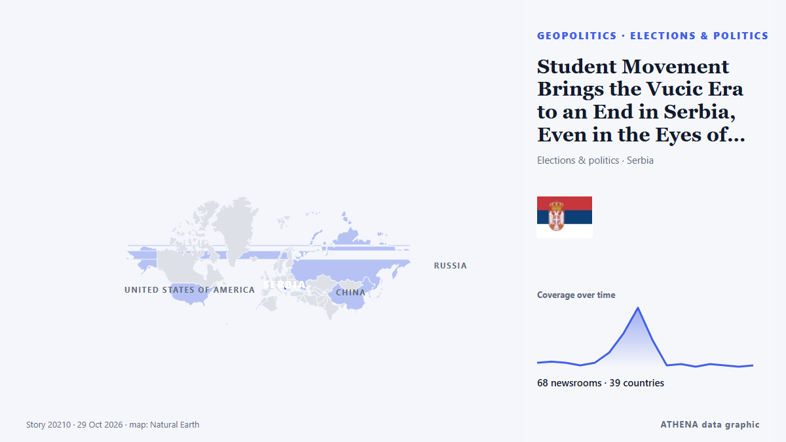

Europa
Europa: die neuesten Ereignisse Land für Land, mit Risiko, Quellen und Ländern von ATHENA.

GeopolitikStudent Movement Brings the Vucic Era to an End in Serbia, Even in the Eyes of the OSCE and the oiip
After two years of student protests, Serbians vote on Sunday in elections that could bring down the ruling party. von BBC News
France to deploy 70,000 police for fresh weekend protests
France will deploy about 70,000 police nationwide as it braces for new protests on Saturday after some of the worst urban violence in years erupted on the sidelines of demonstrations a week ago. von Dawn
UK PM Burnham says he is ‘open’ to formal apology for slavery, but rules out reparations
At least 12.5 million Africans were abducted and sold into slavery. von Express Tribune
Mbappe apologises for Mao joke after brands drop him
Kylian Mbappe has apologised for his "ill-judged" comment about former Chinese leader Mao Zedong, which has led to Chinese brands dropping the Real Madrid forward. von RTÉ News
Two men charged in UK with helping Iran over RAF Fairford incident
British prosecutors said on Tuesday they had charged two men under the National Security Act over an incident last month at the RAF Fairford airbase, with police saying the two were suspected of… von Cyprus Mail
Harry Kane Crowned Ballon d’Or Winner After Long Road To The Top
The couple first encountered each other when they were just four years old at the same primary school. von Evening Standard (London)
Attacker killed outside Belgrade’s Israeli embassy
Serbian police say an unidentified assailant attacked a guard with knives outside the Israeli Embassy in Belgrade and was killed just after midnight Wednesday. von ABC News (International)